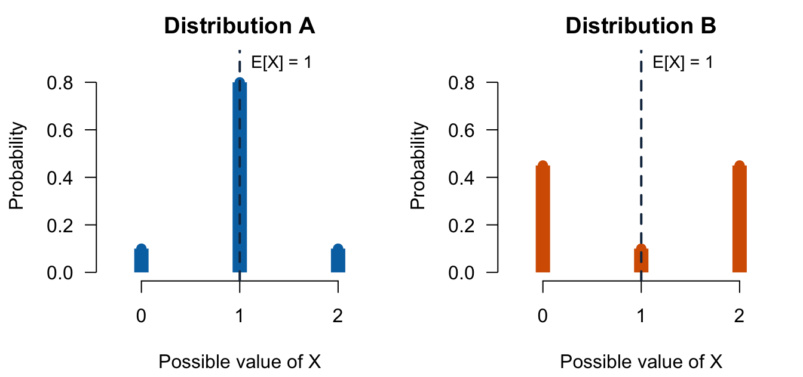
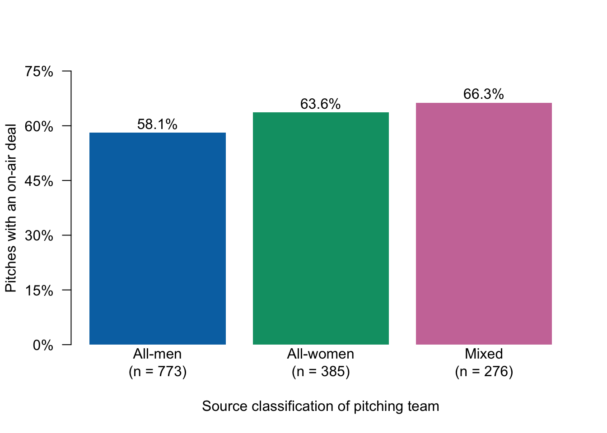
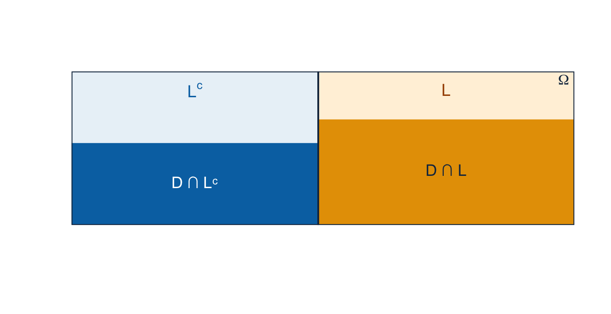

Lecture 4: Variance, conditioning, and belief updating
- calculate and interpret variance and standard deviation;
- distinguish distribution variance from the usual sample variance;
- calculate conditional probabilities and identify their reference classes;
- use total probability and Bayes’ rule.
Before class
Video preparation
Watch Variance,
Conditional
Probabilities, and Bayes’
Rule. Be ready to explain what variance averages, identify the reference
class in a conditional probability, and explain why reversing a condition
changes the denominator. All links are also listed in the
External Video Guide.
If fractions, powers, roots, or the conditioning bar are unfamiliar, review Mathematics Refresher: fractions, powers, and event notation.
Lecture 3 introduced expectation. For a random variable with mean \(\mu=E[X]\), variance is the expected squared distance from that mean:
\[ \operatorname{Var}(X)=E[(X-\mu)^2]. \]
Before calculating it, explain why deviations are squared rather than simply averaged.
Check your preparation
The probability-weighted deviations from the mean sum to zero. Squaring makes both positive and negative deviations contribute to spread.
Compare:
- “Among pitches in Seasons 9–16, what proportion reached an on-air deal?”
- “Among pitches that reached an on-air deal, what proportion came from Seasons 9–16?”
Let \(D\) be the deal event and \(L\) the late-season event. The questions are \(P(D\mid L)\) and \(P(L\mid D)\). The event after the vertical bar defines the restricted reference class and therefore the denominator.
## Deal
## Period No on-air deal On-air deal
## Seasons 1-8 330 377
## Seasons 9-16 229 505Before calculating, point to the numerator and denominator for:
- \(P(D)\);
- \(P(L)\);
- \(P(D\cap L)\);
- \(P(D\mid L)\);
- \(P(L\mid D)\).
Check your denominators
- \(P(D)\): 882 deal records out of 1,441 records.
- \(P(L)\): 734 late-season records out of 1,441 records.
- \(P(D\cap L)\): 505 late-season deal records out of 1,441 records.
- \(P(D\mid L)\): 505 late-season deal records out of 734 late-season records.
- \(P(L\mid D)\): 505 late-season deal records out of 882 deal records.
In class
Variance and standard deviation
MIT explanation (review): 06.2 Variance.
Expectation locates the centre of a distribution, but it does not describe how tightly values cluster around that centre. Two distributions can have the same expectation and very different spreads.
The two distributions below both have expectation 1. In the left panel, most probability is concentrated at 1. In the right panel, most probability is farther from 1, at 0 and 2.

The horizontal axis lists the possible values and the vertical axis gives their probabilities. The dashed line marks the common expectation. The centre is the same, but Distribution B has greater spread because values 0 and 2 receive much more probability. In fact, \(\operatorname{Var}(X)=0.20\) for A and \(0.90\) for B.
To measure spread, start with the deviation \(X-\mu\), where \(\mu=E[X]\). Positive and negative deviations would cancel if they were averaged directly, so variance squares each deviation before taking its probability-weighted average:
\[ \operatorname{Var}(X) =E[(X-\mu)^2] =\sum_x (x-\mu)^2p_X(x). \]
Read the calculation as four steps:
- locate the centre, \(\mu=E[X]\);
- measure each possible deviation, \(x-\mu\);
- square the deviation, \((x-\mu)^2\);
- weight it by \(p_X(x)\) and add across the support.
Large deviations therefore contribute more than small deviations. Variance is zero only when all probability is concentrated at one value.
The equivalent computational form is
\[ \operatorname{Var}(X)=E[X^2]-\{E[X]\}^2. \]
It gives the same result, but the definition \(E[(X-\mu)^2]\) is usually easier to interpret.
The standard deviation is
\[ \operatorname{SD}(X)=\sqrt{\operatorname{Var}(X)}. \]
Variance has squared units; standard deviation returns to the units of \(X\). For a Bernoulli variable, \(\operatorname{Var}(X)=p(1-p)\).
mu_s <- sum(s * p_s)
var_s <- sum((s - mu_s)^2 * p_s)
c(
Var_X = p_hat * (1 - p_hat),
SD_X = sqrt(p_hat * (1 - p_hat)),
Var_S = var_s,
SD_S = sqrt(var_s)
)## Var_X SD_X Var_S SD_S
## 0.2374392 0.4872773 18.1360282 4.2586416Distribution variance and sample variance
For observed values \(x_1,\ldots,x_n\), the usual sample variance is
\[ s^2=\frac{1}{n-1}\sum_{i=1}^n(x_i-\bar{x})^2. \]
If the empirical distribution assigns probability \(1/n\) to each row, its
variance divides by \(n\). R’s var() uses the conventional sample
denominator \(n-1\).
w <- sharks$description_words
c(
empirical_variance_divide_n = mean((w - mean(w))^2),
sample_variance_divide_n_minus_1 = var(w),
sample_sd = sd(w)
)## empirical_variance_divide_n sample_variance_divide_n_minus_1
## 3.646749 3.649282
## sample_sd
## 1.910309These are different summaries of the same 1,441 observations. Calling the sample variance an estimate of population variance additionally requires a sampling model.
Conditional probability
MIT explanation (review): 02.2 Conditional Probabilities.
For events \(A\) and \(B\) with \(P(B)>0\),
\[ P(A\mid B)=\frac{P(A\cap B)}{P(B)}. \]
Conditioning keeps only outcomes inside \(B\), rescales their total probability to 1, and then asks which of those outcomes are also in \(A\). For a fixed \(B\), \(P(\cdot\mid B)\) is itself a probability law on the same sample space.
From the table:
\[ P(D\mid L)=\frac{505}{734}\approx0.688, \qquad P(L\mid D)=\frac{505}{882}\approx0.573. \]
The numerator is 505 in both calculations. The denominators—and therefore the questions—differ.
## P_deal_given_late P_late_given_deal
## 0.6880109 0.5725624A 57.3% figure refers to \(P(L\mid D)\), not \(P(D\mid L)\): 57.3% of deal records are from Seasons 9–16, while 68.8% of Seasons 9–16 records reached an on-air deal.
A second application: source gender composition
The dataset classifies pitching teams as all_men, all_women, mixed, or
unknown. Restricting the calculation to the 1,434 pitches with a known source
classification gives:
known_gender <- sharks$pitcher_gender_group != "unknown"
gender_labels <- c("all_men", "all_women", "mixed")
gender_deal_rates <- tapply(
sharks$deal_on_show[known_gender],
factor(sharks$pitcher_gender_group[known_gender], levels = gender_labels),
mean
)
gender_deal_rates## all_men all_women mixed
## 0.5808538 0.6363636 0.6630435
The horizontal axis identifies the source’s presenter categories. The vertical axis is a within-category percentage, not a count: for example, the 63.6% bar means that 63.6% of the 385 all-women pitch records reached an on-air deal. These are conditional proportions within selected televised pitches. The classification describes presenters rather than every company member, seven pitches have an unknown classification, and the comparison does not isolate a causal effect of gender.
The multiplication rule
MIT explanation (review): 02.6 The Multiplication Rule.
Rearranging the definition gives
\[ P(A\cap B)=P(A\mid B)P(B). \]
Reversing the roles of \(A\) and \(B\) gives the same joint probability:
\[ P(A\cap B)=P(A\mid B)P(B)=P(B\mid A)P(A). \]
For the late-season deal event:
c(
direct_joint = mean(D & L),
conditional_times_base = mean(D[L]) * mean(L),
reverse_conditional_times_base = mean(L[D]) * mean(D)
)## direct_joint conditional_times_base
## 0.3504511 0.3504511
## reverse_conditional_times_base
## 0.3504511This is the algebraic reason the two conditional probabilities can share a numerator while having different denominators.
Partitions and the law of total probability
MIT explanation (review): 02.7 Total Probability Theorem.
Lecture 2 introduced a partition as a division of \(\Omega\) into non-overlapping events that cover every possible outcome. Conditioning gives the probability of \(A\) within each part. The multiplication rule turns each conditional probability into a joint piece, and adding the pieces gives the overall probability of \(A\). This is the law of total probability.
If \(P(B_i)>0\), then:
\[ P(A)=\sum_{i=1}^{k}P(A\mid B_i)P(B_i). \]
The early/late events \(\{L^c,L\}\) form a partition, so
\[ P(D)=P(D\mid L^c)P(L^c)+P(D\mid L)P(L). \]
## direct from_periods
## 0.6120749 0.6120749The overall deal probability is a weighted average of the period-specific deal probabilities. The group probabilities supply the weights.

The outer rectangle is \(\Omega\). Its two columns are the early and late parts of the partition; column width represents the probability of that period. Within each column, the lower coloured region represents a deal. Its area is \(P(D\mid\text{period})P(\text{period})=P(D\cap\text{period})\). The two coloured areas do not overlap, and their sum is \(P(D)\).
Bayes’ rule
MIT explanation (review): 02.8 Bayes’ Rule.
From the multiplication rule,
\[ P(B_i\mid A)=\frac{P(A\mid B_i)P(B_i)}{P(A)}. \]
Using total probability to expand the denominator:
\[ P(B_i\mid A)= \frac{P(A\mid B_i)P(B_i)} {\sum_jP(A\mid B_j)P(B_j)}. \]
For the Shark Tank events:
bayes_late_given_deal <- mean(D[L]) * mean(L) / mean(D)
c(
from_bayes = bayes_late_given_deal,
from_table = mean(L[D])
)## from_bayes from_table
## 0.5725624 0.5725624Bayes’ rule reverses the direction of conditioning. It does not reverse causal direction and does not make an observational comparison causal.
Base rates and classification
Suppose an AI classifier flags a pitch as likely to receive a deal. To find
\[ P(\text{deal}\mid\text{positive flag}), \]
we need:
- the deal base rate \(P(\text{deal})\);
- sensitivity \(P(\text{positive}\mid\text{deal})\);
- the false-positive rate \(P(\text{positive}\mid\text{no deal})\).
High sensitivity alone is insufficient: the deal base rate and false-positive rate also determine the proportion of flagged pitches that receive a deal.
After class
Retrieval
- What does variance average?
- Why do variance and standard deviation have different units?
- What is the denominator of \(P(A\mid B)\)?
- Why is \(P(A\mid B)\) generally different from \(P(B\mid A)\)?
- What makes a collection of events a partition?
- What does the denominator in Bayes’ rule calculate?
Check your answers
- Variance averages squared deviations from the distribution mean.
- Variance has squared units; standard deviation is its square root and has the variable’s original units.
- \(P(B)\), the probability of the conditioning event.
- They condition on different reference classes and usually have different denominators.
- The parts are mutually disjoint and their union is \(\Omega\).
- It calculates the total probability of the observed evidence across all mutually exclusive cases in the partition.
Practice
- A variable \(Y\) has PMF \(p_Y(0)=0.2\), \(p_Y(1)=0.5\), and \(p_Y(2)=0.3\). Use \(E[Y]=1.1\) and \(E[Y^2]=1.7\) to calculate \(\operatorname{Var}(Y)\) and \(\operatorname{SD}(Y)\).
- Use the early/late partition to verify \(P(D)=P(D\mid L^c)P(L^c)+P(D\mid L)P(L)\).
- A classifier has a 10% deal base rate, 80% sensitivity, and a 20% false-positive rate. Calculate \(P(\text{deal}\mid\text{positive flag})\).
- Calculate and interpret \(P(L\mid D)\). Explain why it differs from \(P(D\mid L)\).
- R reports an empirical variance of 3.647 and a sample variance of 3.649 for written-description length. Explain why the values differ.
- Among the 1,434 pitches with a known source gender group, 428 of 661 pitches with women represented and 449 of 773 all-men pitches reached an on-air deal. Calculate both conditional deal proportions and interpret the difference.
Check your answers
- \(\operatorname{Var}(Y)=1.7-1.1^2=0.49\) and \(\operatorname{SD}(Y)=\sqrt{0.49}=0.7\).
- \((377/707)(707/1441)+(505/734)(734/1441)=882/1441\approx0.612\).
- Bayes’ rule gives \[ \frac{0.80(0.10)}{0.80(0.10)+0.20(0.90)} =\frac{0.08}{0.26}\approx0.308. \] About 30.8% of positively flagged cases are deals under this model.
- \(P(L\mid D)=505/882\approx0.573\): among deal records, 57.3% came from Seasons 9–16. It differs from \(P(D\mid L)=505/734\approx0.688\) because the conditioning event—and therefore the denominator—is different.
- The empirical-distribution variance weights every one of the 1,441 records by \(1/1441\) and therefore divides by \(n\). The usual sample variance divides by \(n-1\), so it is slightly larger.
- The conditional proportions are \(428/661\approx0.648\) and \(449/773\approx0.581\), a descriptive difference of about 6.7 percentage points. This comparison uses the dataset’s presenter-gender classification and selected televised pitches. It does not establish that gender caused the difference or describe pitches with an unknown classification.
Worked exam interpretation
Question. A student sees \(P(D\mid L)=0.688\) and writes, “68.8% of deal pitches came from late seasons.”
Check a model answer
The calculation conditions on \(L\), so the denominator is the 734 pitches in Seasons 9–16. The correct interpretation is that 68.8% of late-season records reached an on-air deal. The reverse conditional is \(P(L\mid D)=505/882=57.3\%\). Neither quantity measures completed investment or a causal season effect.
Next: Lecture 5: Joint random variables, covariance, and correlation.
Formula sheet: Lecture 4 formulas.
For a more formal explanation, consult Nieuwenhuis, Statistical Methods for Business and Economics, Chapters 7–8.